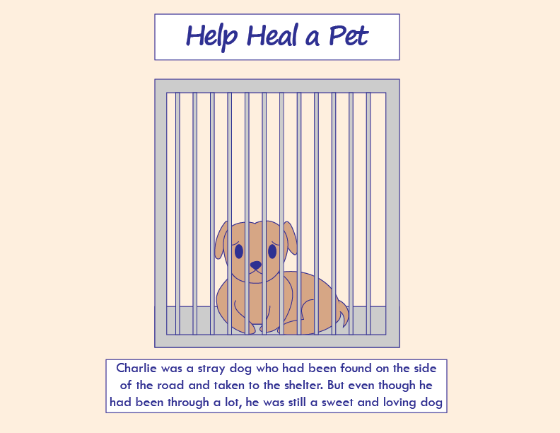
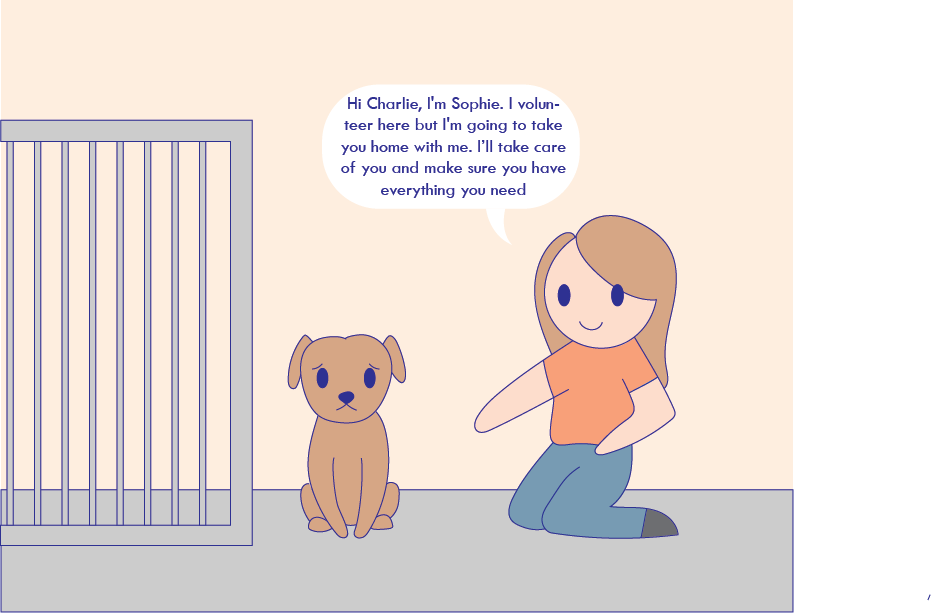
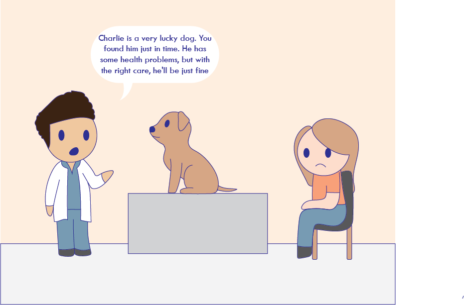
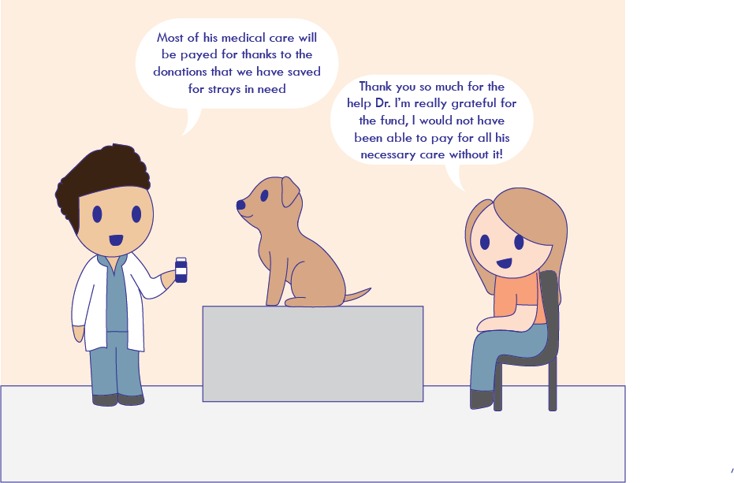
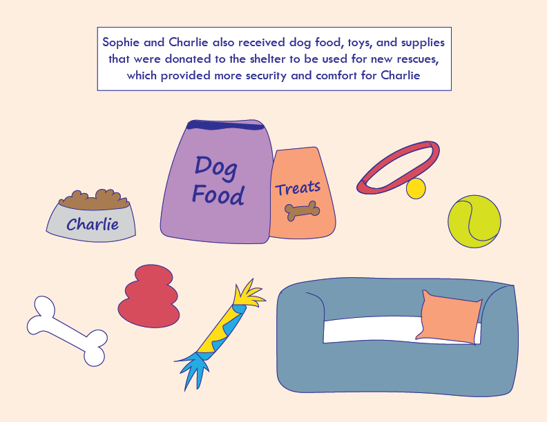
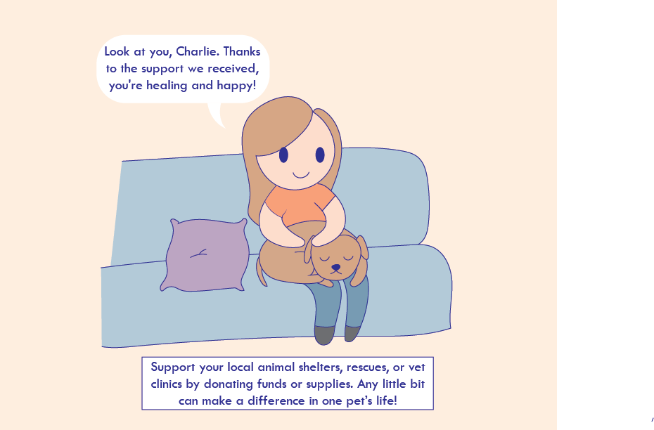
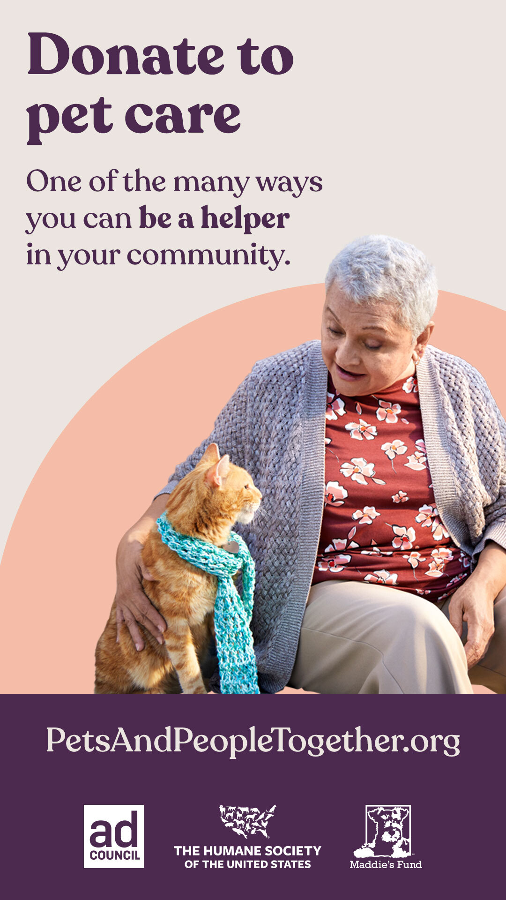
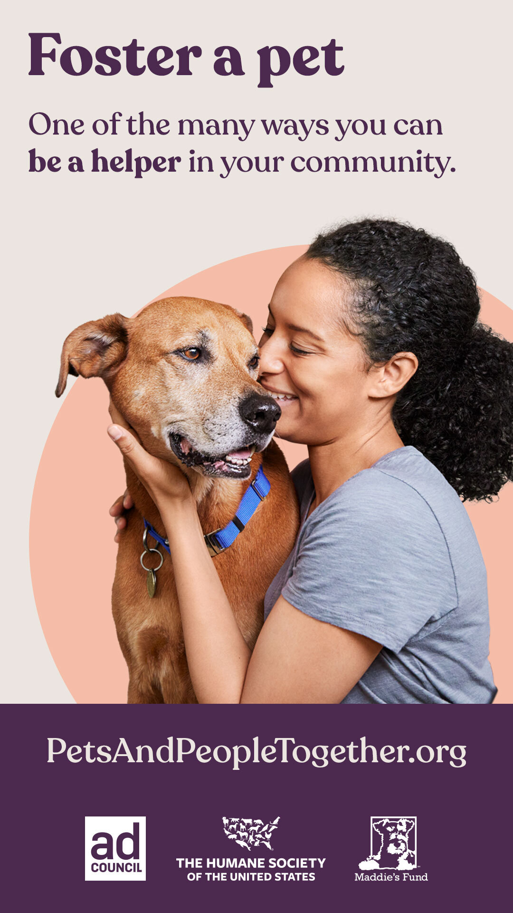

My social cause is about supporting pets in the community because small acts can help keep pets and families togther. I was inspired by the Pets and People Together campaign because I have some background caring for pets. I did a comic about a rescue dog that is adopted by a volunteer, then taken to the vet, and helped by donations of money, food, and supplies. PetsandPeopleTogether.org
     Copyright © 2023 Jailene Hernandez - All Rights Reserved
The Pets and People Together campaign highlights the important role that community can play in keeping families together. Some ways to help are to: Foster a pet for a friend, family member or neighbor. Donate pet food to a food pantry. Donate to cover the veterinary expenses of local pets. Help lost pets find their way home. Help a pet find a new home
 Copyright PetsandPeopleTogether.org